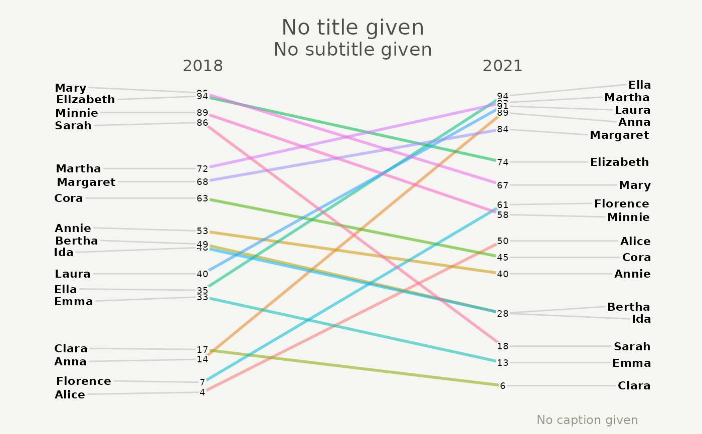

Slope graph for ggplot2
ggslope.RdCreates a slope graph ideal to use when computing changes in one or more indicators between waves of a survey or other time series data with a low number of periods.
Usage
ggslope(
data,
x,
y,
group,
DataLabel = NULL,
title = "No title given",
subtitle = "No subtitle given",
caption = "No caption given",
LineThickness = 1,
LineColor = "ByGroup",
DataTextSize = 2.5,
DataTextColor = "black",
DataLabelPadding = 0.05,
DataLabelLineSize = 0,
DataLabelFillColor = "#f5f5f2",
WiderLabels = FALSE,
ReverseYAxis = FALSE,
ReverseXAxis = FALSE,
RemoveMissing = TRUE
)Source
Adapted and updated from this great package.
Arguments
- data
Data frame containing the data in a long form. Required input.
- x
The variable on the x axis, usually time, survey wave, etc. Required input.
- y
The variable on the y axis, usually an indicator such as poverty and inequality measures. Required input.
- group
Grouping variable showing various levels of the indicator.
- DataLabel
Data label
- title
Plot title
- subtitle
Plot subtitle
- caption
Plot caption
- LineThickness
Line width
- LineColor
Line color
- DataTextSize
Text size of the data point value.
- DataTextColor
Text color of the data point value.
- DataLabelPadding
Text padding of the label of each level.
- DataLabelLineSize
Text label line size.
- DataLabelFillColor
Text label fill color.
- WiderLabels
Set wider labels? False by default.
- ReverseYAxis
Revert Y axis? False by default.
- ReverseXAxis
Revert X axis? False by default.
- RemoveMissing
Remove missing values? True by default.
Examples
HohgantR::indicators_long |>
dplyr::filter(indicator == "Indicator") |>
ggslope(year, value, DisaggregationLevel)
